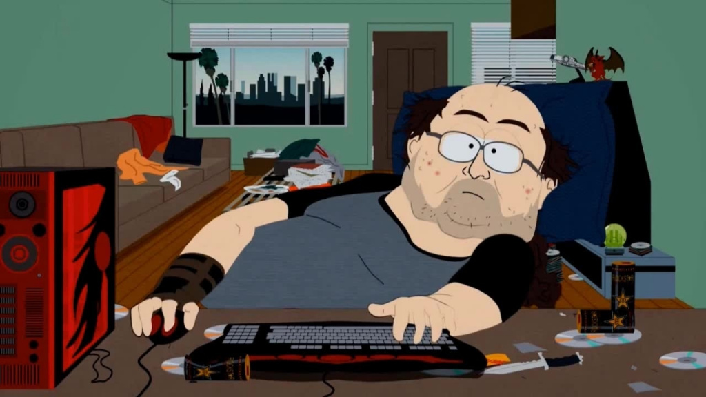

Time is all relative based on age and experience. When you are a child an hour is a long time to wait but a very short time when that’s all the time you are allowed on your iPad. As a teenager time goes faster the more deadlines you have and the more you procrastinate. As a young adult, you think you have forever to live and don’t appreciate the time you spend with others. As a middle-aged adult, time flies by as you watch your children grow up. And finally, as you get old and you have fewer responsibilities and fewer demands on you, time slows. You appreciate each day and are thankful you are alive. An hour is the same amount of time for everyone yet it can feel so different in how it goes by.